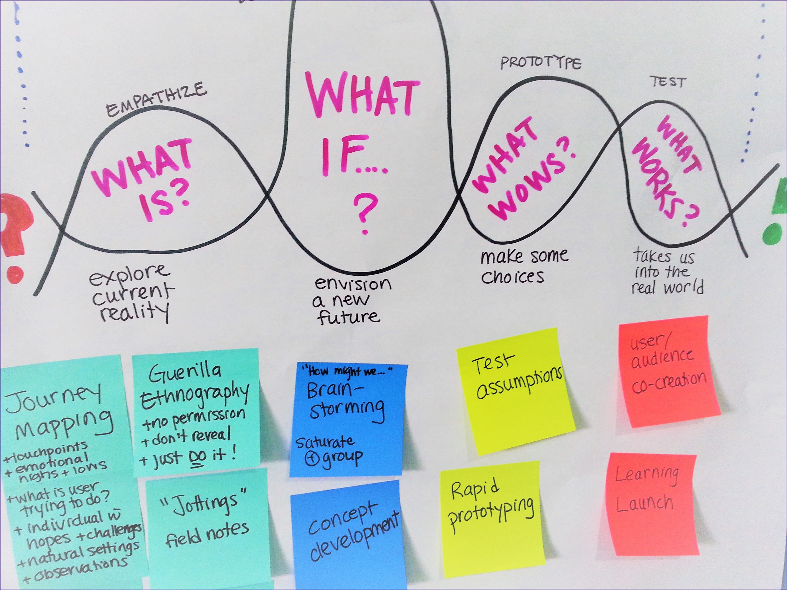
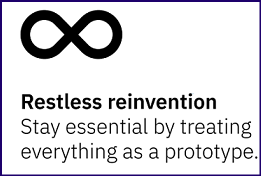

Design Thinking for solo technical writers
What does design thinking have to do with writing, or any task, really?

Image credits: Christine Prefontaine
I'm an IBM-certified Design Thinking Co-Creator. It's serendipity! I stumbled upon IBM's series a year ago, while googling unrelated topics.
As a technical writer, it's my job to focus on user goals in all my tasks. And as a remote worker, I sometimes run the risk of missing outliers while planning doc structures, followed by writing sprints, reviews, improvs...you know the drill.
It's hard then, to not dread stakeholders' meetings that could result in drastic edits, threatening those perfectly-crafted sentences and info architecture layouts.
And that's exactly the sort of risk that design thinking can minimize. With a specific set of tools and processes, it requires team members across job roles to truly collaborate, keeping end-user goals at the center of discussions. Everyone in the team stands to gain.
For example, your perspective on the product UI or workflows can improve the end user's experience. Similarly, giving dev teams a say in doc design/planning/publishing makes them care about product docs. True story!

Design thinking reminds me to focus on empathy, human-centered solutions, and continuous improvement.
If I have to pick one aspect of design thinking that (sole) writers must imbibe, it's this:
Fail fast and cheap.
By not aiming for a 'perfect' draft, I spend less time theorizing about possible solutions, and more time actually improving ones that work.
The only constant in life is change. ~Heraclitus